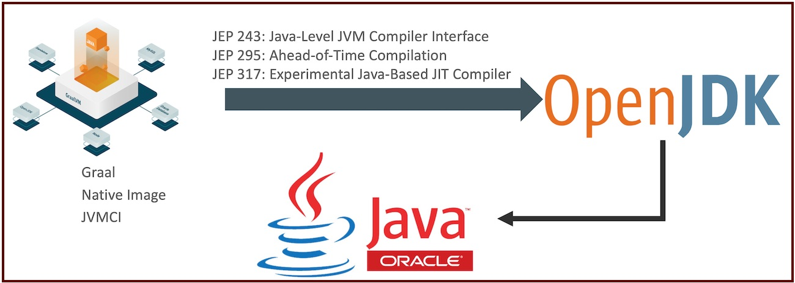
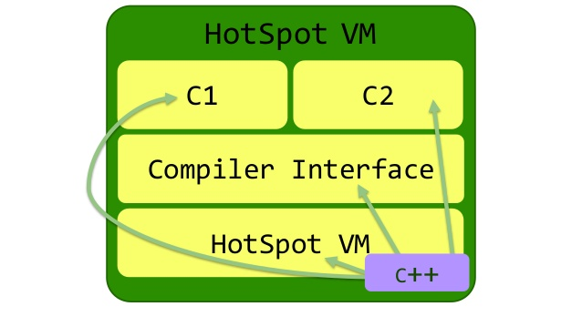
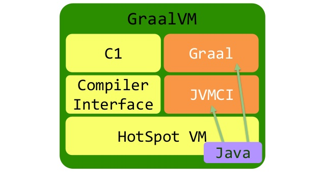
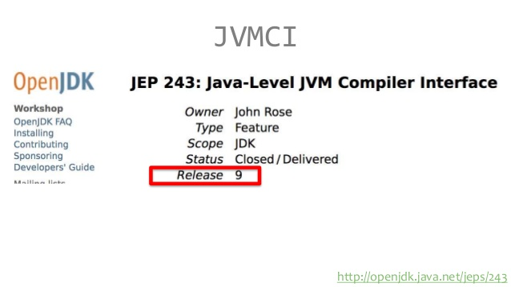
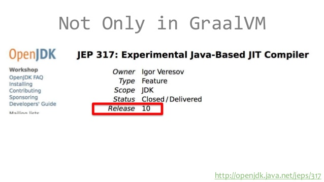

Graalvm != Graal
meta-circular 스타일이란 언어를 실행하는 환경과 코드를 개발하는 언어가 같은 스타일을 의미한다. C++로 개발된 HotSpot 은 지난 20년동안 자바 성능을 크게 끌어올렸지만, C++ 코드가 너무 복잡해진 나머지 추가적인 성능 개선이 어려운 상황이다. 그 대안으로 R&D로 개발해온 Maxine VM 이 추구하던 Meta-Circular 자바의 구현체가 바로 GraalVM 이다.
GraalVM의 3가지 특징
- Graal을 기반으로하는 고성능 자바 = New JIT Compiler
- Polyglot을 기반으로 다양한 언어의 통합 기능 = Language Platform
- Native 자바의 빠른 startup time을 제공 = AOT Compiler
- 클라우드와 Docker/Kubernetes 환경에 적합한 기능
GraalVM 개발 사이클

GraalVM의 JVMCI, AOT, Graal JIT이 위 그림과 같이 새로운 기법을 JEP-243, JEP-295, JEP-317로 정의하여 OpenJDK에 적용하고 있다. GraalVM에서 개발되고 검증된 이러한 기술은 OpenJDK에 적용되어 표준 자바에 추가된다. 그리고 OpenJDK에 적용된 기술은 결과적으로 Oracle Java에 반영된다.
GraalVM의 의미
- 자바 신기술 개발과 검증의 시작점: 새로운 개념과 기술을 적용하는 자바 확장 및 실험 환경
- 신기술에 대한 피드백 창고: 오픈소스와 GraalVM Communtiy Edition을 통한 활발한 피드백 수집과 개선
- 고성능 자바: Graal JIT 컴파일러와 메모리 구조
- Native 특징을 이용한 효율적인 임베디드 자바
Graal
GraalVM 이 Hotspot 전체를 java 로 작성한 것을 뜻하지 않는다. C2 컴파일러와 HotspotVM 과 통신하는 컴파일러 인터페이스 부분을 java로 다시 작성된 부분이 포함된 것을 GraalVM 이라고 한다.

여기서 C2 컴파일러를 Graal 이라고 말한다. 가끔 GraalVM 과 Graal 을 똑같은 의미로 생각하는 사람들이 있는데, 그렇지 않다.

Graal 의 성능
공식 문서에 나와있는 성능 실험을 살펴보면 아래의 코드를 작성하고,
public class CountUppercase {
static final int ITERATIONS = Math.max(Integer.getInteger("iterations", 1), 1);
public static void main(String[] args) {
String sentence = String.join(" ", args);
for (int iter = 0; iter < ITERATIONS; iter++) {
if (ITERATIONS != 1) System.out.println("-- iteration " + (iter + 1) + " --");
long total = 0, start = System.currentTimeMillis(), last = start;
for (int i = 1; i < 10_000_000; i++) {
total += sentence.chars().filter(Character::isUpperCase).count();
if (i % 1_000_000 == 0) {
long now = System.currentTimeMillis();
System.out.printf("%d (%d ms)%n", i / 1_000_000, now - last);
last = now;
}
}
System.out.printf("total: %d (%d ms)%n", total, System.currentTimeMillis() - start);
}
}
}
컴파일하고 실행을 해서,
javac CountUppercase.java
java -XX:+UnlockExperimentalVMOptions -XX:+EnableJVMCI -XX:+UseJVMCICompiler
결과를 보면,
1 (1581 ms)
2 (480 ms)
3 (364 ms)
4 (231 ms)
5 (196 ms)
6 (121 ms)
7 (116 ms)
8 (116 ms)
9 (116 ms)
total: 59999994 (3436 ms)
워밍업 시간이 제법 걸린다는 것을 알 수 있다. 워밍업 시간은 응용 프로그램의 다중 스레드 개수 또는 VM이 사용하는 스레드 수와 같은 다양한 요소에 따라 달라진다. 코어가 적으면 위밍업 시간이 길어진다. 보다 자세한 Graal 컴파일의 통계(컴파일 된 메소드, 처리 된 시간, 처리 된 바이트 코드 (인라인 된 메소드도 포함), 생성 된 머신 코드의 크기 및 컴파일 중 할당 된 메모리 양)를 보려면 프로그램을 실행할 때 다음 플래그를 추가해야한다.
-Dgraal.PrintCompilation=true
-XX : -UseJVMCICompiler 옵션을 사용하여 GraalVM 컴파일러를 사용하지 않도록 설정하고 VM에서 기본 C2 컴파일러를 사용하여 성능을 비교해보자.
javac CountUppercase.java
java -XX:+UnlockExperimentalVMOptions -XX:+EnableJVMCI -XX:-UseJVMCICompiler
결과를 보면,
1 (602 ms)
2 (443 ms)
3 (429 ms)
4 (423 ms)
5 (418 ms)
6 (432 ms)
7 (454 ms)
8 (415 ms)
9 (407 ms)
total: 69999993 (4443 ms)
워밍업 시간은 짧지만, 처음과 끝의 속도차이가 그리 차이나지 않는 것을 볼 수 있다.
Graal 은 GraalVM 에서만 사용가능한가?
앞서 설명한 개발 사이클을 보면, GraalVM 에 적용된 기능이 openJDK 에도 추가되는 것을 확인했다. JVMCI 는 openJDK 9 에서부터, 
Graal 은 openJDK 10 에서부터 사용가능해졌다. 
JAVA 10 에서 사용법
앞선 성능에서 이미 보여줬다.
-XX:+UnlockExperimentalVMOptions -XX:+UseJVMCICompiler
마무리
Polyglot, AOT Compiler 부분은 생략한다. Polyglot 은 현재 고려할 사항이 아니라서 제외했다. 그리고 GraalVM native image 기능은 아직 실험적인 기능으로 운영 레벨에서 사용할 일이 없다. 스프링에서도 Spring Framework 5.3 에서나 제대로 지원해줄 것 같다.
Reference
- https://www.slideshare.net/jyukutyo/graal-in-graalvm-a-new-jit-compiler
- https://www.graalvm.org/docs/examples/java-performance-examples/
- https://github.com/oracle/graal/blob/master/substratevm/LIMITATIONS.md
- https://github.com/spring-projects/spring-framework/wiki/GraalVM-native-image-support